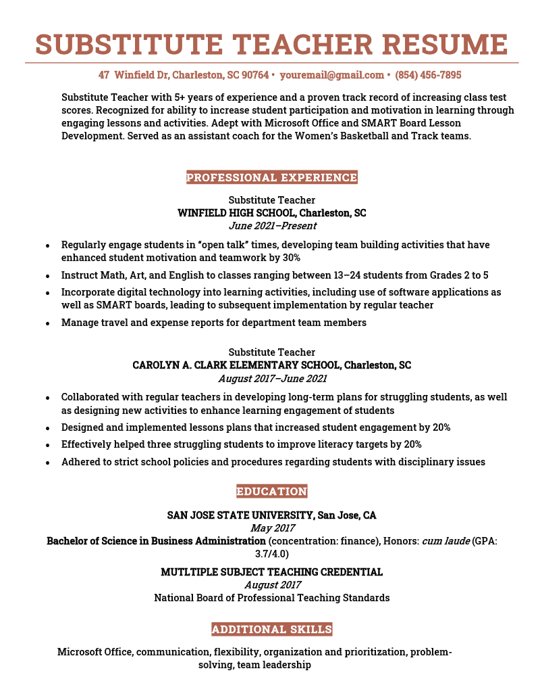
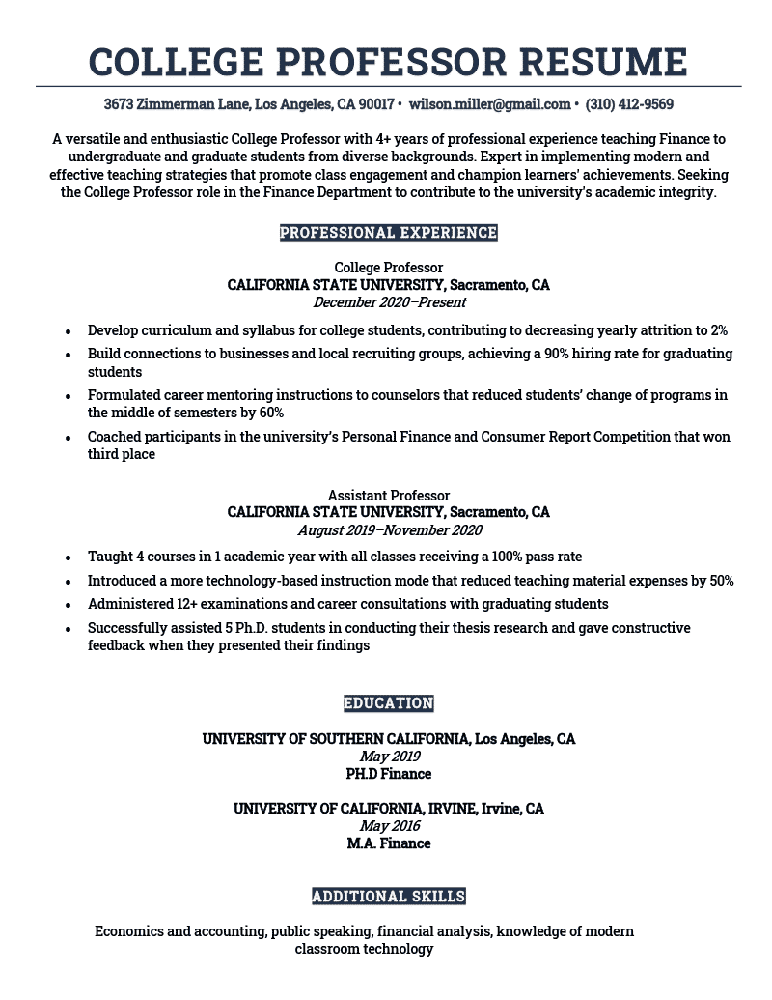

Teacher Resume Examples & Templates for 2024
Our 16 teacher resume examples for different roles and experience levels can give you an idea of how to make your own teaching resume. We also provide a text template, video walkthrough, and teacher-specific resume writing tips to help you land your next teaching position.
Entry-Level Resume


Senior Resume

Teacher resume template (text format)
[Your Name]
[Your Address], New York, NY
[Your Email Address] | [Your Phone Number] | [LinkedIn Profile] (optional)
Resume Objective
Innovative professional with a strong track record of improving test scores by adapting teaching methods to students’ needs. Able to develop personal relationships with students and build their confidence in their abilities. Looking to support the school’s mission by creating a personal, engaging learning environment that celebrates students’ unique talents and ideas.
Certifications
- Teaching Assistant Course – Adult Education Centre, Chicago, IL | 20XX
- CELTA (Certificate in Teaching English to Speakers of Other Languages) – Cambridge CELTA Course Online | 20XX
Skills
- Communication skills
- Differentiation
- Microsoft Office
- Google Workspace
- Interpersonal Skills
Professional Experience
Language Arts Teacher
DREAM School, Chicago, IL | Aug 20XX – Present
- Plan and design standards-based lessons for diverse groups of learners.
- Teach daily lessons with multiple modalities to target various learning styles, raising average grades by 23% in one year.
- Assess 150+ students’ progress throughout the term and work closely with other staff to efficiently plan and coordinate work.
- Trained four new teachers in project-based learning, wellness through movement, and integrating technology into daily lessons.
Teaching Assistant
Evergreen Academy, Chicago, IL | August 20XX – April 20XX
- Ensured all students fully comprehended the curriculum and provided individualized support to students who required extra guidance.
- Mentored struggling students and supported their mental well-being with healthy coping strategies and regular check-ins.
- Volunteered time to extra-curricular activities like the Dance Team.
Education
University of Illinois | B.S. General Education
Graduation Date: May 20XX
University of Illinois | A.A. / Mass Communication
Graduation Date: May 20XX
Elementary school teacher resume
A good elementary school teacher resume should show that you’re dedicated and patient. For example:

Substitute teacher resume
This example will provide you with tips and examples to create a compelling substitute teacher resume that showcases your strengths and qualifications.
College professor resume
A college professor resume should highlight your scholarly achievements, teaching experience, and contributions to your field of study.
Make a Resume in Minutes
Pick your template, fill in a few details, and our builder will do the rest.